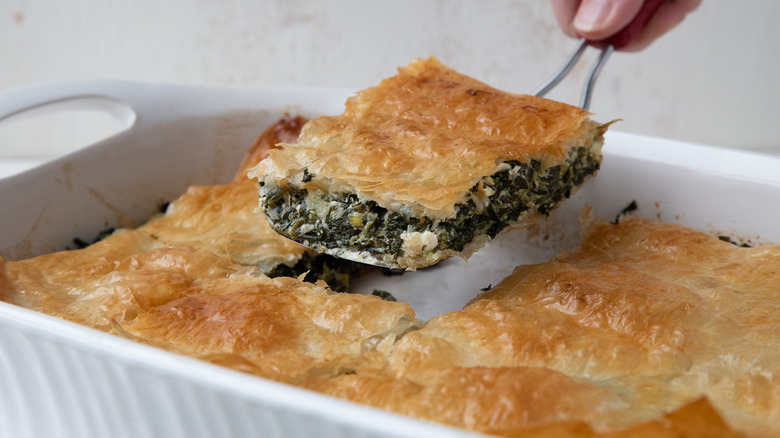

Spanakopita Recipe

What is Spanakopita?
Spanakopita is a delectable mixture of spinach and cheeses sandwiched between light and crispy layers of buttered phyllo dough. This dish is great for meal preppers as you can make up to a dozen servings in a single bake, and it freezers and reheats excellently! For added flavor, it's highly recommended that you pair spanakopita with some homemade tzatziki.
Ingredients
- 1 package Phyllo dough, defrosted overnight
- 3 tablespoons extra virgin olive oil
- 1 cup unsalted butter, melted
- 3 eggs
- 1 large onion, finely chopped
- 8 garlic cloves, finely minced
- 4 pounds chopped frozen spinach, thawed and drained (organic recommended)
- 1 quart full fat cottage cheese
- 1 pack cream cheese
- 12oz high quality feta (made of sheep or goat milk)
- Salt
- Pepper
Steps
- Before you start cooking, be sure that you left the Phyllo dough in the fridge overnight to thaw. When you're ready to start prepping the other ingredients, remove the Phyllo from the fridge and leave it out at room temperature while it's still in the packaging.
- Before combining your ingredients, be sure that your chopped spinach is fully thawed and drained. If needed, you can quick thaw the spinach in a colander with hot water constantly running. Mix the spinach with the hot water until fully thawed, then squeeze the excess water out of the spinach using your hands and place the drained spinach in a large mixing bowl.
- Add your extra virgin olive oil to a frying pan and heat over medium-high heat. When the pan is up to temperature, saute your finely chopped onion until it's beginning to brown, then add your finely minced garlic. Once the garlic is lightly browned, remove the garlic and onion mixture and combine it with your spinach in the mixing bowl.
In a separate mixing bowl, combine your eggs, cream cheese, cottage cheese, and feta (without brine, if there is any). Once these ingredients are mixed together, thoroughly mix this mixture into your spinach mix. Add your desired amount of salt and pepper at this stage. Now that your spanakopita filling is mixed, pre-heat your oven to 350F.
- Melt your butter in a bowl and use a pastry brush to coat the bottom of a large baking pan (preferably one with high walls) with melted butter.
- Remove your phyllo from its packaging, gently cover the bottom of your pan with the dough, and then brush another layer of butter over the phyllo you just laid. Be sure that your phyllo is extending about an inch or two over the edges of your pan, and continue layering your phyllo with butter brushed between each layer until you're halfway through the pack of phyllo.
- Once you're halfway through your phyllo, spoon the spinach mix into the pan and smooth out the top until it's evenly distributed across the pan.
- Butter the top of your spinach mix, and then continue layering phyllo on top, with butter between each layer, as you did with the bottom of the spanakopita.
- Once you've used up all your phyllo layers, roll the overhanging edges of phyllo together on all four sides as far as you're able to roll it, though try to avoid breaking the top layer of phyllo as you do this.
- Place your spanakopita in the pre-heated oven for 30-40 minutes, or until the edges and top of the spanakopita are browned.
- Once baked to your liking, remove the spanakopita from the oven and let cool until ready to eat or package for later.
- If you want to save your spanakopita for later, you can cut it up into whatever sized portions you like, wrap it in aluminum foil, and place the individually wrapped pieces in a freezer bag to be frozen. When you're ready to reheat your spanakopita, it's recommended that you defrost it overnight in the fridge before baking for about 20 minutes at 400F. You can also quickly defrost it in the microwave, though the oven is recommended to get a nice crisp on the phyllo.
- And voila! You have yourself a delicious, healthy meal that's easy to make in large portions for the whole family, or just yourself.